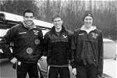

Churchill Boat Transport Co.

Need reliable boat transport at a sensible price? Let the professionals at Churchill Boat Transport Co. take care of all your boat transport requirements.
Here's a sample of the range of services we have offered to Cambridge College clients over the last six months:
- We service all major UK regattas. We will deliver your boat direct to your boating location (or at least to a nearby field).
- Having trouble spinning? Boat too long? We'll attempt an overly ambitious U-turn and snap the end off for you!
- Boats are delivered consistently late, no matter how close the destination. This added stress raises your base heart rate and makes your pre-race warm-up more effective.
- We can offer delivery to unusual locations that other boat transporters just can't get to. In particular, we are experts in dealing with low bridges, barbed-wire fences and poorly parked tour buses.
- Concerned about your opposition following you to your secret training location? Our trailer indicator wiring is specially reversed to confuse following vehicles.
- Tough first round draw at Henley? Arrange for us to transport your opponents to the race... we'll have their boat out of action for months.
- All boats are turbo-tied(TM) to cope with the enormous acceleration of our dodgy turbocharged 1987 Volvo towing vehicle.
- We are the only boat transporters in the UK with a vehicle dynamics specialist to configure the trailer for maximum safety.
- We now offer a special self-drive service. Prior to delivery, we make a number of modifications to the trailer to ensure that it is unroadworthy. We also give details of your route to the police, to guarantee that you're pulled over.